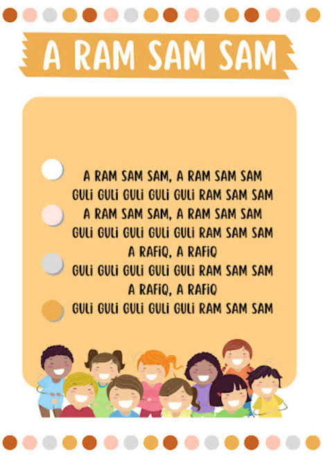

create by Rebeca Uchoa e Pietra Tretin
A Ram Sam Sam é uma famosa canção infantil originária de Marrocos que se espalhou pelo mundo inteiro e ganhou versões de vários artistas, como a Xuxa e canais de animação como o LooLoo Kids.
A música é cantada em formato de brincadeira cumulativa e, embora no Brasil pareça apenas uma sequência de sons divertidos, ela utiliza algumas palavras inspiradas no árabe marroquino.
A ram sam sam, a ram sam sam Guli, guli, guli, guli, guli, ram sam sam A ram sam sam, a ram sam sam Guli, guli, guli, guli, guli, ram sam sam A rafiq, a rafiq Guli, guli, guli, guli, guli, ram sam sam A rafiq, a rafiq Guli, guli, guli, guli, guli, ram sam sam (Algumas versões brasileiras adaptam as palavras e mudam "A rafiq" para "Auê, auê" ou "Mãos para cima, nunca desista")
Guli: Significa "me diga" ou "fale" em árabe marroquino
Ar-rafīq: Significa "amigo" ou "companheiro"
A diversão principal da música está em acelerar o ritmo a cada repetição. As crianças geralmente fazem gestos específicos para cada palavra: Ram sam sam: Bater as mãos nas coxas ou fechar os punhos e rodar um sobre o outro. Guli guli: Girar as mãos na frente docorpo ou fazer cócegas no ar. A rafiq: Erguer as mãos para o alto, como se estivesse celebrando.
